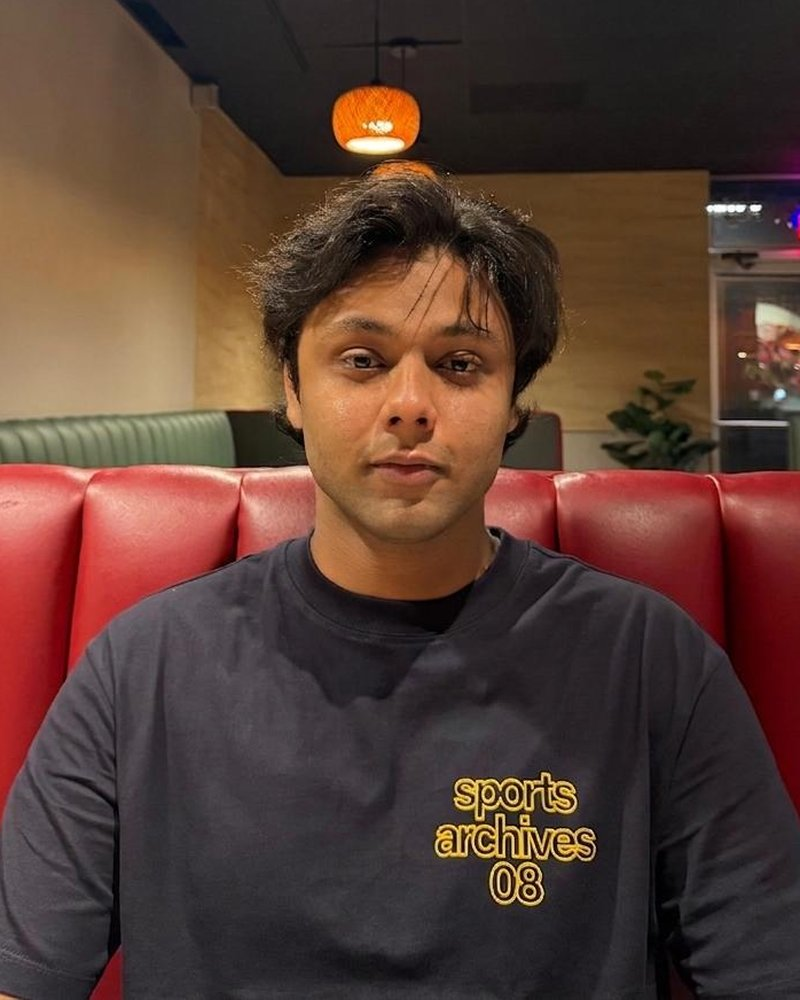
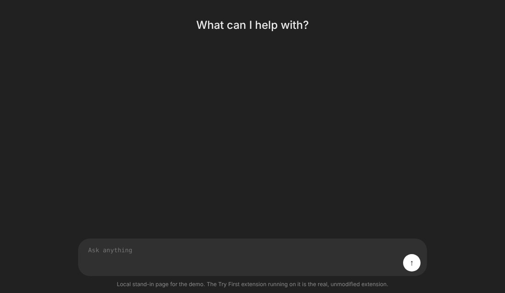

I'm Umer, a junior studying Computer Science with a minor in Mathematics at DePauw University. Most of college so far has been about learning to build things that actually work, not just things that look good in a demo.
I've taught coding to over 100 students across two different programs and co-founded an NGO that runs food drives and works with orphanages. Outside of code I care way too much about mechanical keyboards, read a lot of fiction, go on long runs, and type fast enough that it's become a personality trait at this point. Feel free to reach out, I like talking to people about what they're building.
Code for the Community Inc. — Redwood City, CA (Remote)
Sep 2026 – Present
Tenzer Technologies — Greencastle, IN
May 2026 – Aug 2026
DePauw University — Greencastle, IN
Jan 2026 – Apr 2026
iD Tech Camps — Cincinnati, OH & San Mateo, CA
May 2025 – Aug 2025
What my projects actually do, without the jargon. Every number here comes from a real run.

A Chrome extension for people who want to use AI without letting it do all their thinking. When you ask ChatGPT or Claude to write, solve or analyze something, it pauses and asks you to take a shot yourself first. Quick factual questions go straight through.
It also tracks how often you tried first, and the website has a quiz that shows you an AI answer and asks what is wrong with it.
Recorded with the real extension on a stand-in chat page, since the real sites need a login.
Try the quiz →Apps keep popular data in a cache so they don't have to fetch it every time. When many parts of a program use the same cache at once, the simple design puts one lock on it, so everyone queues for one door.
I wrote one in C++ that splits the cache into 64 independent pieces, each with its own lock. Eight workers almost never collide, so they all get through at once.
Give it a stack of PDFs and ask a question in plain English. It finds the passages that answer it, writes the answer, and shows you exactly where on which page it came from, so you can check it instead of trusting it.
The question here is a real one, asked of Attention Is All You Need, the paper behind modern AI chatbots.
Open Policy Agent is an open-source rules engine that companies use to decide who is allowed to do what, like “only managers can approve refunds.” Its rules language comes with built-in functions, and the Java version was missing some.
I wrote three of them. Each one has to give exactly the same answer as the original Go version, down to the byte, and the maintainers merged all three.
Using records for 7,043 customers of a phone and internet company (a public IBM dataset), I built a model that predicts who is likely to cancel and explains which factors push them there.
The clearest signal is the contract. After five years, only about 3 in 10 month-to-month customers are still around. On two-year contracts, almost everyone is.
Curves traced from the survival chart in the project.
See the analysis →Three builtins merged into Open Policy Agent's Java SDK: array flattening, Ed25519 JWT verification, and AWS SigV4 request signing.
View ProjectRAG pipeline built with LangGraph, OpenAI embeddings, and ChromaDB. Ingests PDFs and answers queries via function calling and a CLI interface.
View ProjectFull-stack Android push notification pipeline using AWS SNS, Lambda, and Firebase FCM for real-time delivery.
View ProjectChrome extension and macOS menu bar app that classifies AI prompts, tracks usage, and includes an AI literacy quiz. Built with the Anthropic API and live on the Chrome Web Store.
View ProjectChurn prediction pipeline with SHAP explainability, survival analysis, and ROI simulation. Includes an uplift modeling demo built on simulated data.
View ProjectLive cryptocurrency tracker for iOS using the CoinGecko API, built with Swift and UIKit.
View ProjectComputational economics research modeling self-employment decisions under credit constraints. Built in Julia.
View Project